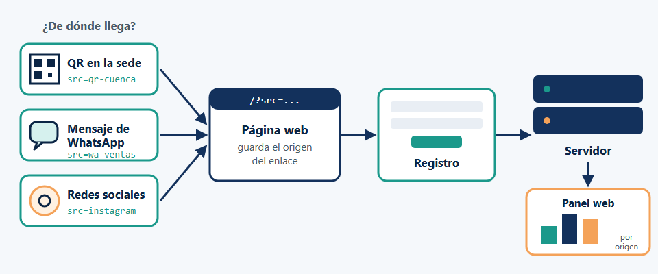

Iceberg Ecuador: juegos interactivos en Cuenca, Guayaquil y Quito
Caso elaborado desde la experiencia del autor en Iceberg Labs, el área de tecnología de la empresa.
Iceberg Ecuador es una empresa ecuatoriana de entretenimiento con salas de juegos interactivos en tres ciudades. En mi trabajo he visto que, para un negocio así, la web no es un extra: es por donde llega buena parte de la gente y por donde el personal revisa lo que pasa en cada sede.
La página web
El sitio público de la empresa muestra las sedes, los juegos y la información para visitarlas. Está construido con un framework moderno, pero lo que al final llega al navegador sigue siendo HTML, CSS y JavaScript, o sea, lo mismo que se estudia en esta unidad.
Registro de jugadores
Cada enlace que se comparte lleva un parámetro src en la dirección. El código QR que está en la sede de Cuenca, por ejemplo, abre la página con ?src=qr-cuenca, y el enlace que se envía por WhatsApp lleva ?src=wa-ventas. La página guarda ese origen y lo adjunta al registro del jugador.

Es lo mismo que explica la guía sobre el método GET: las variables viajan en la dirección de la página (Torres Guarnizo, 2026). La diferencia es que aquí no viaja ningún dato personal, solo una etiqueta que identifica el canal.
Paneles web para el personal
Para revisar reportes, el personal no instala programas: entra desde el navegador a paneles web internos con su usuario y contraseña. Así se puede revisar la información de las tres ciudades desde cualquier computadora o tablet autorizada.
Datos personales y menores de edad
A las salas asisten niños, adolescentes y adultos. Por eso el registro pide solo los datos necesarios, y la Ley Orgánica de Protección de Datos Personales de 2021 obliga a tener un cuidado especial con la información de niñas, niños y adolescentes.